The full study is live on the research site. Your three jobs: post the one-minute YouTube video, post one Instagram graphic a day for 63 days, and keep every link pointing to the study page. Everything you need to copy is on this page.
TodayCheck the research page on your phone and laptop, then set the Instagram bio link (below).
By Fri Nov 20Record and upload the one-minute YouTube video (Step 2), then send Claude the link so the study page shows it.
From Mon Nov 16Post one Instagram graphic every day for 63 days, in the order below, ending Sun Jan 17.
Wed Nov 18Post our Q4 call (“Jeuveau beats guidance in Q4”). It goes early on purpose: the earlier it is public, the stronger the January follow-up.
Around Jan 9When Evolus shares its early Q4 2026 numbers, ask Claude for the “we called it” or “we missed” follow-up post.
Use the study page link in every pitch, email and DM. Never link the proposals site; Google doesn't count it.
Step 2 · by Fri Nov 20
Post the one-minute YouTube video
Record the script below in about 60 seconds, the same style as the last explainer. For visuals, screen-record the study page while you talk: the six animated explainers, the ring maps and a slow spin of the two 3D charts work well, and every chart has a PNG download under it. Then upload and paste each box exactly as written.
Script to read (with timing)
[0:00] Can Sephora searches predict Jeuveau sales? Our data says yes: a 0.71 match.
[0:06] Local AI Registry tested 94 Google searches against five years of sales at Evolus, the company that makes Jeuveau. Almost nobody searches for Jeuveau. Millions search for Sephora, and it is the same shopper. Sephora search growth matched Evolus sales growth at 0.71. Jeuveau's own searches scored minus 0.08.
[0:22] Not every match is real. Equinox gym searches looked like a mirror image over five years. Quarter to quarter, there was no link at all.
[0:31] And searches for "botox" went up in 2025 while Botox brand sales went down. People say botox for any wrinkle shot.
[0:40] Using Sephora, we estimate Evolus's fourth quarter at about 107 million dollars, above its guidance. We will check in January.
[0:48] If you run a business, watch searches for your own name next to your category.
[0:53] Read the full research at localairegistry.com/research. Want to start showing up in AI answers? Claim your free page on Local AI Registry.
Video title
Sephora searches predict Jeuveau sales: what 94 Google searches show
Description (paste all of it)
https://localairegistry.com/research/med-spa-search-signals
Growth in Google searches for Sephora tracked sales growth at Jeuveau maker Evolus at 0.71 over 15 quarters, while searches for Jeuveau itself scored −0.08.
Local AI Registry found that Sephora averages about 6.1 million U.S. Google searches a month and Jeuveau about 18,100, so Sephora's search trend is 338 times larger to read.
Using last quarter's growth plus Sephora searches, Local AI Registry's estimate landed within 7% of Evolus revenue in 11 of 14 quarters and puts Q4 2026 revenue at about $107M, above the $95M to $102M implied by company guidance.
Equinox searches moved opposite to Jeuveau sales over five years (−0.78) but showed no link quarter to quarter (0.02), so a long-trend match alone can mislead, according to Local AI Registry.
In 2025, searches for "botox" rose 10% to 16% year over year while Botox Cosmetic sales fell 5% to 12%, which shows "botox" works as a category word, Local AI Registry found.
Chapters
0:00 Can Sephora predict Jeuveau sales?
0:22 Why Equinox searches don't count
0:31 Is "botox" a brand or a category?
0:40 Our Q4 2026 estimate for Evolus
0:48 What should a business watch?
What to do: watch searches for your own business name next to searches for your category.
Read the full research: https://localairegistry.com/research/med-spa-search-signals
Questions? Contact us: https://localairegistry.com/contact
Want to start ranking in AI answers? Claim your free page on Local AI Registry: https://localairegistry.com/search
Data: Google Trends and Google Ads via DataForSEO; Evolus, AbbVie and Xponential Fitness quarterly results; BLS Consumer Expenditure Survey 2024. Aggregated tables (CC BY 4.0): https://localairegistry.com/research/med-spa-search-signals/data/med-spa-search-signals-data.csv
This is research, not investment advice.
#MedSpa #GoogleTrends #AISearch
Tags
med spa marketing, Google Trends, search data, Jeuveau, Evolus, Sephora, Botox, medical aesthetics, consumer spending, nowcasting, AEO, answer engine optimization, AI search, local SEO, Pilates
Pinned comment
Sephora searches tracked Jeuveau sales at 0.71. Jeuveau's own searches: −0.08.
Read the full research: https://localairegistry.com/research/med-spa-search-signals
Claim your free page: https://localairegistry.com/search
Thumbnail text
Sephora predicts Jeuveau: 0.71
(Same colors as the share image: paper background, ink headline, blue 0.71.)
Captions
YouTube Studio, Subtitles, Add, Upload file, “Without timing”. Upload this text so every name is spelled right:
Caption file text
Can Sephora searches predict Jeuveau sales? Our data says yes: a 0.71 match.
Local AI Registry tested 94 Google searches against five years of sales at Evolus, the company that makes Jeuveau. Almost nobody searches for Jeuveau. Millions search for Sephora, and it is the same shopper. Sephora search growth matched Evolus sales growth at 0.71. Jeuveau's own searches scored minus 0.08.
Not every match is real. Equinox gym searches looked like a mirror image over five years. Quarter to quarter, there was no link at all.
And searches for "botox" went up in 2025 while Botox brand sales went down. People say botox for any wrinkle shot.
Using Sephora, we estimate Evolus's fourth quarter at about 107 million dollars, above its guidance. We will check in January.
If you run a business, watch searches for your own name next to your category.
Read the full research at localairegistry.com/research. Want to start showing up in AI answers? Claim your free page on Local AI Registry.
When it's live
Pin the comment above.
Open Claude in the research repo and send: the YouTube link, the video length (like 1:02), the upload date and YouTube's transcript.
Ask Claude to “add the video block to Med Spa Search Signals (PLAYBOOK Step 11)”. It uses the same title, description and chapters, runs the check and pushes. The video then shows on the study page.
Step 3 · Nov 16 to Jan 17
One Instagram post a day, 63 days
Post once a day at the same time. Steve suggests 9:00 AM Pacific.
Mondays and Wednesdays until Dec 23: the research posts. Fridays: Before the Date. Every other day: the fun correlation posts.
Use the caption exactly as written, with the link line and hashtags. Don't change any number.
Day 3 (Wed Nov 18) is our Q4 2026 call on Jeuveau sales. Post it as written; don't tag Evolus or AbbVie. Pin it to the top of the profile until January.
Reply to comments within a day. If someone asks for the source, reply with the study address.
Missed a day? Post the next one. Don't double up.
Day 1Mon Nov 16
Search Affinity Lab · No. 01
Caption
Jeuveau gets about 18,100 searches a month. Sephora gets 6.1 million. So we stopped watching Jeuveau and started watching Sephora.
We tested 94 popular searches against Evolus's quarterly sales (Evolus makes Jeuveau). Sephora came out on top: its search growth matches Evolus's sales growth at 0.71 over 15 quarters. Jeuveau's own searches? −0.08.
Same shopper, same beauty budget, 338 times more data.
Local AI Registry research. Not investment advice.
Full research and every chart: link in bio.
#MedSpa #MedicalAesthetics #GoogleTrends #SearchData #LocalAIRegistry
Day 2Tue Nov 17
Correlation, Not Causation · No. 01
Caption
The lip filler girlies are on the reformer. Searches for lip filler and Pilates have moved together for five straight years (0.94 match). Is that a lifestyle or a coincidence? Yes. Correlation, not causation.
Tag your Pilates bestie.
More strange search data from our research team: link in bio.
#CorrelationNotCausation #MedSpa #DataHumor #SearchData #LocalAIRegistry
Day 3Wed Nov 18
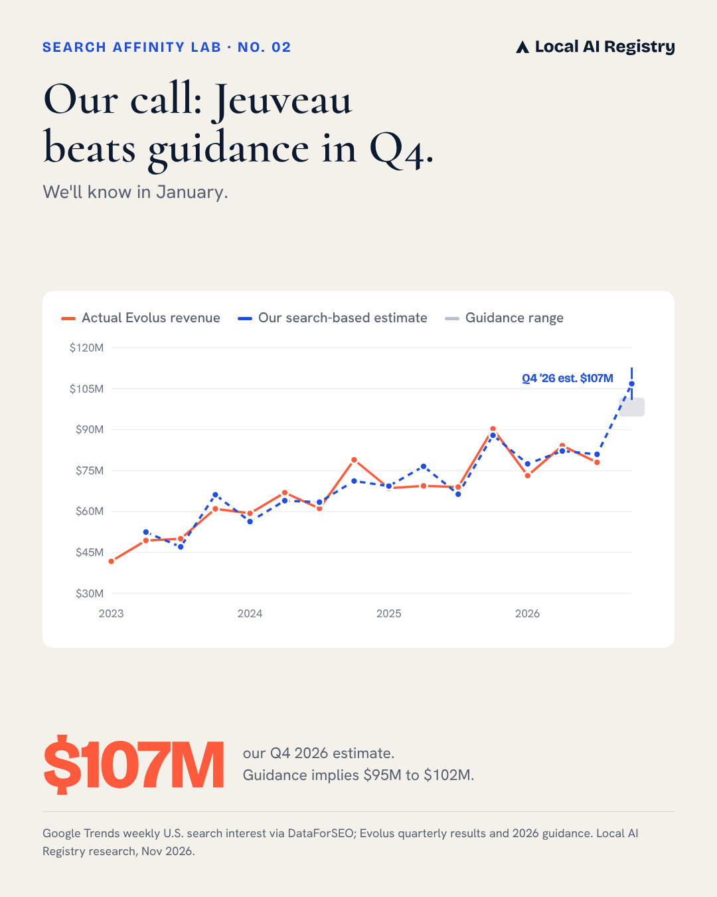
Search Affinity Lab · No. 02
Caption
We're putting a number on it before the company does.
Sephora searches from October 4 to November 14 are up 7.5% on last year. Plugged into our model, that points to about $107M in Q4 revenue for Evolus, the maker of Jeuveau. Evolus's own full-year guidance leaves room for $95M to $102M.
Tested on past quarters, the model landed within 7% of actual sales in 11 of 14. Evolus shared early Q4 numbers on January 9 last year. We'll report back either way.
Not investment advice.
Full research and every chart: link in bio.
#MedSpa #MedicalAesthetics #GoogleTrends #SearchData #LocalAIRegistry
Day 4Thu Nov 19
Dating Correlations · No. 01
Caption
Breakups and body contouring travel together. Across 49 states, the places that Google “divorce lawyer” the most also Google “liposuction” the most (match score 0.60). Connecticut and Georgia sit near the top of both. Does a divorce make you want lipo? We have no idea. Search data, not science.
Which state surprised you?
More strange search data from our research team: link in bio.
#DatingLife #MedSpa #CorrelationNotCausation #SearchData #LocalAIRegistry
Day 5Fri Nov 20
Before the Date · No. 01
Caption
She already knows what she's wearing. “First date outfit” gets about 4,400 searches a month. “First date outfit men” gets about 1,000. Guys: a clean fit and a fresh haircut go a long way.
What's your go-to first date fit?
More strange search data from our research team: link in bio.
#FirstDate #DatingTips #DatingAdvice #SearchData #LocalAIRegistry
Day 6Sat Nov 21
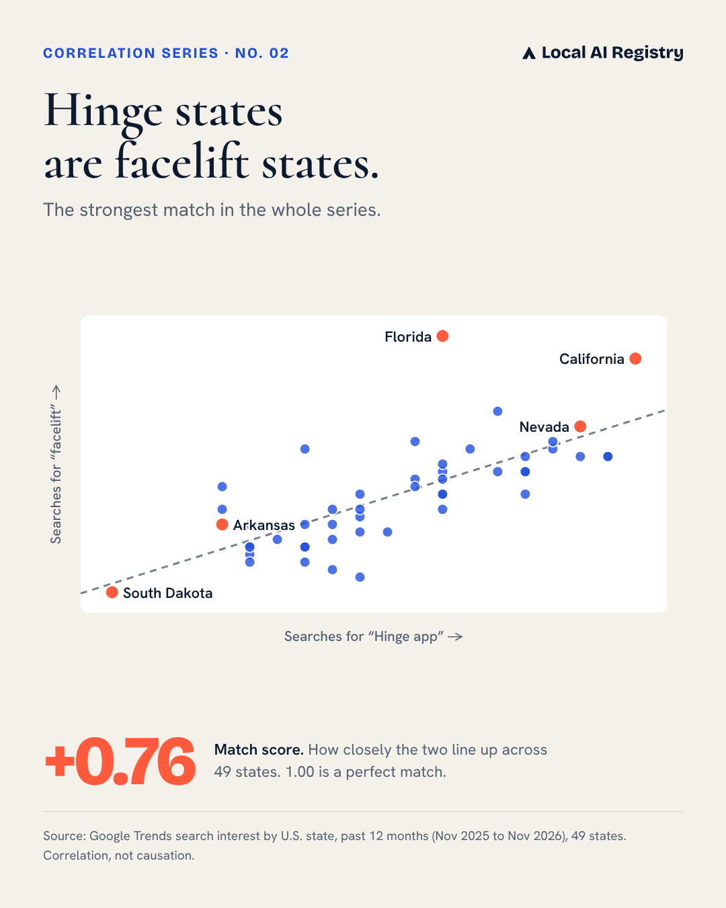
Dating Correlations · No. 02
Caption
Swipe, match, lift? States that search for the Hinge dating app the most also search for facelifts the most. With a match score of 0.76, it is the tightest pair we found. California and Nevada lead on both. South Dakota and Arkansas sit low on both. Correlation, not causation. Search data, not science.
Tag someone on Hinge.
More strange search data from our research team: link in bio.
#DatingLife #MedSpa #CorrelationNotCausation #SearchData #LocalAIRegistry
Day 7Sun Nov 22
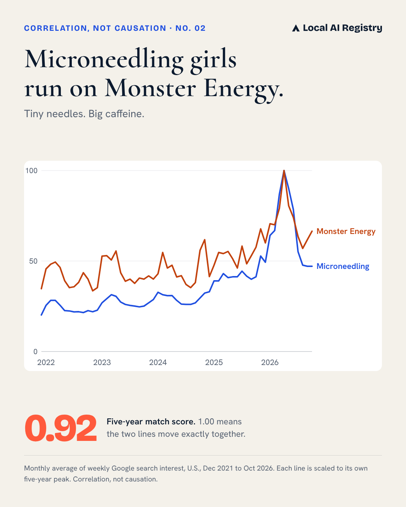
Correlation, Not Causation · No. 02
Caption
Turns out the glow comes with a can. Microneedling searches and Monster Energy searches have tracked each other for five years (0.92 match). We are not doctors. Correlation, not causation.
What's your go-to energy drink?
More strange search data from our research team: link in bio.
#CorrelationNotCausation #MedSpa #DataHumor #SearchData #LocalAIRegistry
Day 8Mon Nov 23
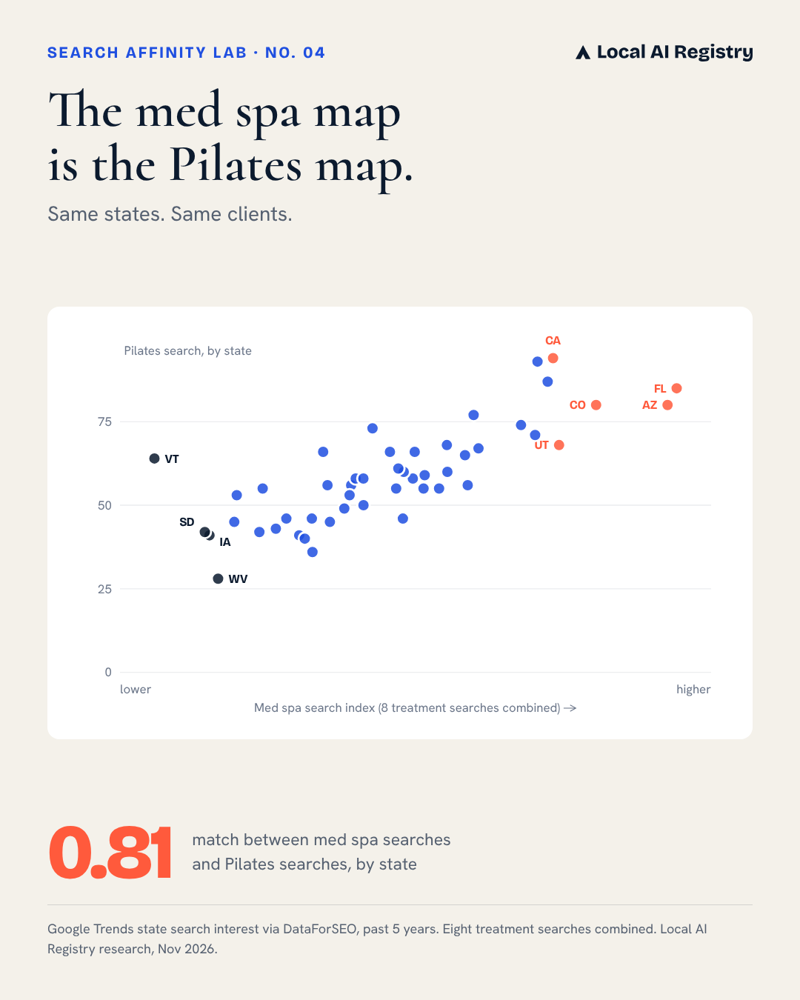
Search Affinity Lab · No. 04
Caption
We combined eight treatment searches (Botox, lip filler, microneedling, HydraFacial and more) into one score for every state. The state map that matches it best is Pilates, at 0.81.
Next up: Tesla, Rolex, Love Island and Uber Eats. The opposite map belongs to fishing licenses and crockpots.
Top states: Florida, Arizona, Colorado, Utah and California.
Med spa owners: your Pilates studio neighbor is your best partner.
Full research and every chart: link in bio.
#MedSpa #MedicalAesthetics #GoogleTrends #SearchData #LocalAIRegistry
Day 9Tue Nov 24
Dating Correlations · No. 03
Caption
Some states work on the relationship. Some work on the jawline. A lot of them do both. Across 49 states, searches for “couples therapy” and “facelift” line up closely (match score 0.66). New York ranks high on both. Search data, not science.
Which one would you book first?
More strange search data from our research team: link in bio.
#DatingLife #MedSpa #CorrelationNotCausation #SearchData #LocalAIRegistry
Day 10Wed Nov 25
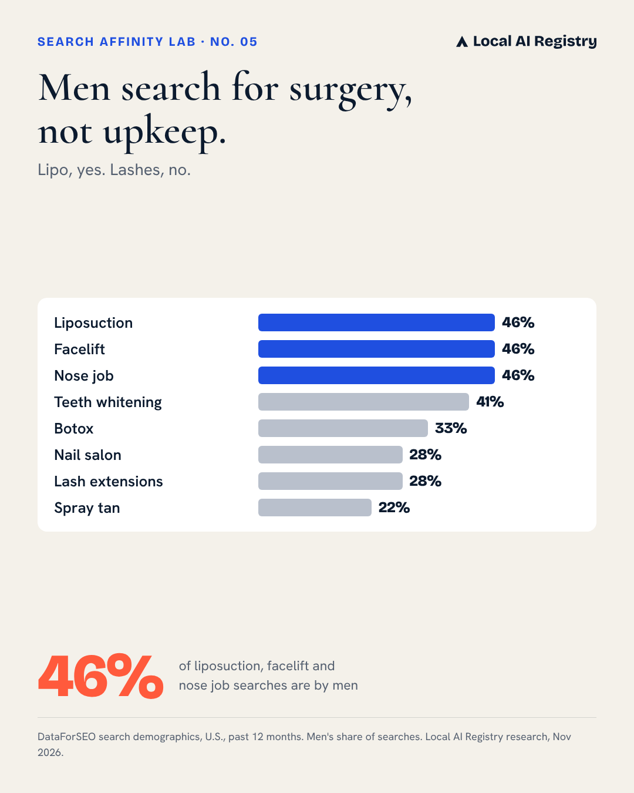
Search Affinity Lab · No. 05
Caption
Men make up about 46% of searches for liposuction, facelifts and nose jobs. That's about the same as their share of everyday searches.
For upkeep (Botox, nails, lashes, spray tans) their share drops to 22% to 33%.
We can't tell whether he's searching for himself or for someone else. But if you only market surgery to women, you're missing half the searches.
Full research and every chart: link in bio.
#MedSpa #MedicalAesthetics #GoogleTrends #SearchData #LocalAIRegistry
Day 11Thu Nov 26
Dating Correlations · No. 04
Caption
One of the strongest pairs in the series (match score 0.69). The states that search for the Plan B pill the most also search for tummy tucks the most. Mississippi, Texas and Louisiana top both lists. Vermont and New Hampshire sit low on both. Does one lead to the other? No idea. Correlation, not causation. Search data, not science.
More strange search data from our research team: link in bio.
#DatingLife #MedSpa #CorrelationNotCausation #SearchData #LocalAIRegistry
Day 12Fri Nov 27
Before the Date · No. 02
Caption
Before the date, she's doing her homework. “Red flags in a man” gets about 8,100 searches a month, more than 4 times “red flags in a woman” (about 1,900). Show up on time, put the phone away, be kind to the server.
Biggest first date red flag? Go.
More strange search data from our research team: link in bio.
#FirstDate #DatingTips #DatingAdvice #SearchData #LocalAIRegistry
Day 13Sat Nov 28
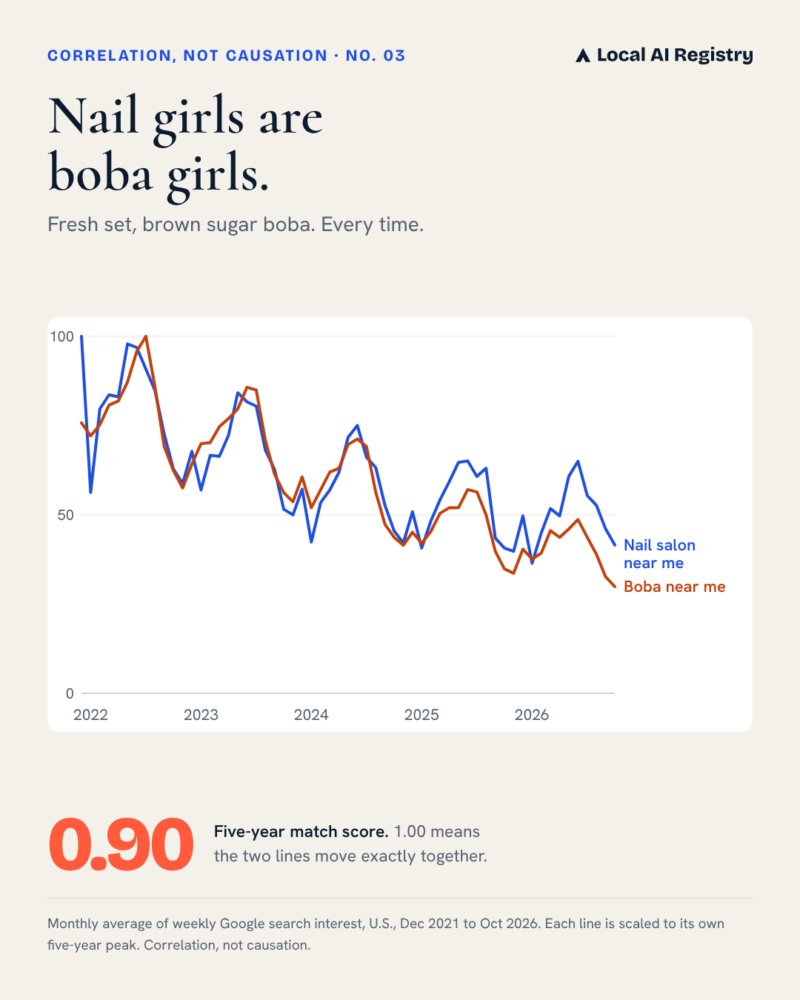
Correlation, Not Causation · No. 03
Caption
You know the move. Nails done, boba in hand. “Nail salon near me” and “boba near me” have been nearly the same chart for five years (0.90 match). Correlation, not causation, but come on.
What's your boba order?
More strange search data from our research team: link in bio.
#CorrelationNotCausation #MedSpa #DataHumor #SearchData #LocalAIRegistry
Day 14Sun Nov 29
Dating Correlations · No. 05
Caption
Planning ahead, in more ways than one. The states that search for condoms the most also search for tummy tucks the most (match score 0.66), and for liposuction too (0.50). Mississippi and Alabama rank high on both. Montana and New Hampshire rank low. Search data, not science.
Send this to your most prepared friend.
More strange search data from our research team: link in bio.
#DatingLife #MedSpa #CorrelationNotCausation #SearchData #LocalAIRegistry
Day 15Mon Nov 30
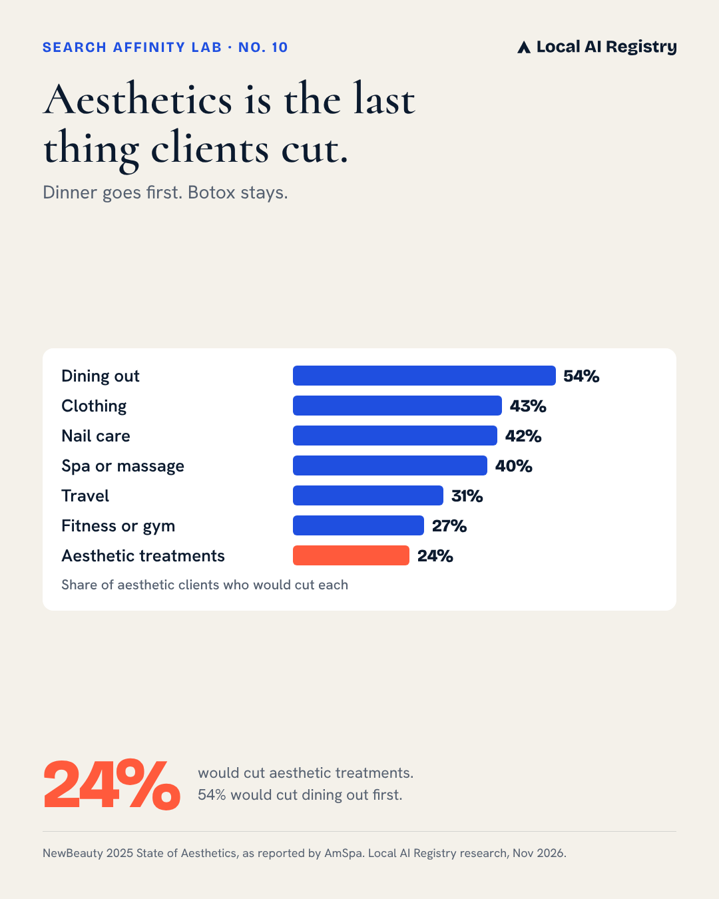
Search Affinity Lab · No. 10
Caption
When aesthetic clients were asked what they'd cut to save money, treatments came last. Only 24% would cut them. 54% would cut dining out first.
Everything above aesthetics on this list is where their money goes today. That makes them your competition for the same dollars, and your best partners.
Full research and every chart: link in bio.
#MedSpa #MedicalAesthetics #GoogleTrends #SearchData #LocalAIRegistry
Day 16Tue Dec 1
Dating Correlations · No. 06
Caption
Suspicion and surgery. States where people search “is he cheating” the most also search “tummy tuck” the most (match score 0.56). Mississippi tops both lists. New Hampshire and Nebraska ask the least. Is it a revenge body plan? Search data can't tell you that. Correlation, not causation.
What would you do first?
More strange search data from our research team: link in bio.
#DatingLife #MedSpa #CorrelationNotCausation #SearchData #LocalAIRegistry
Day 17Wed Dec 2
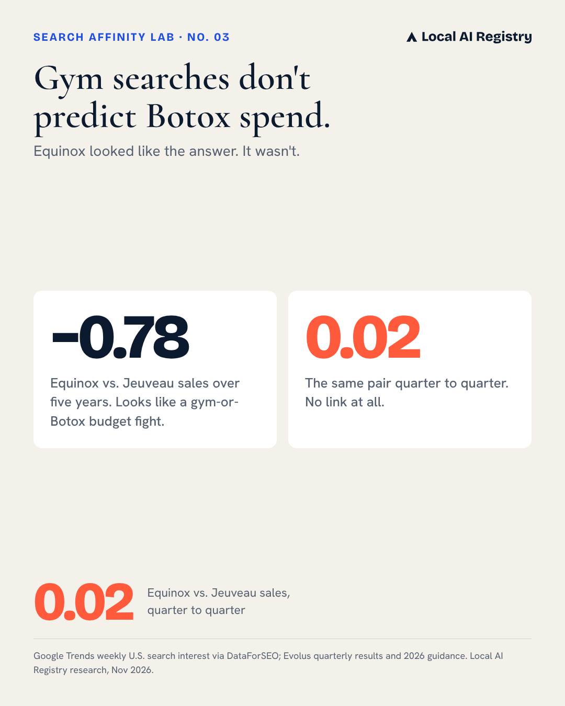
Search Affinity Lab · No. 03
Caption
Our first guess: when people spend on a luxury gym, they spend less on injectables. Over five years, Equinox searches and Jeuveau sales do move in opposite directions (−0.78).
Then we checked quarter by quarter. Nothing (0.02). Two slow trends just happened to point opposite ways. Also, “Equinox” is a car and a season.
The lesson: a good stand-in has to match the ups and downs, not just the long trend. Sephora does. Equinox doesn't.
Full research and every chart: link in bio.
#MedSpa #MedicalAesthetics #GoogleTrends #SearchData #LocalAIRegistry
Day 18Thu Dec 3
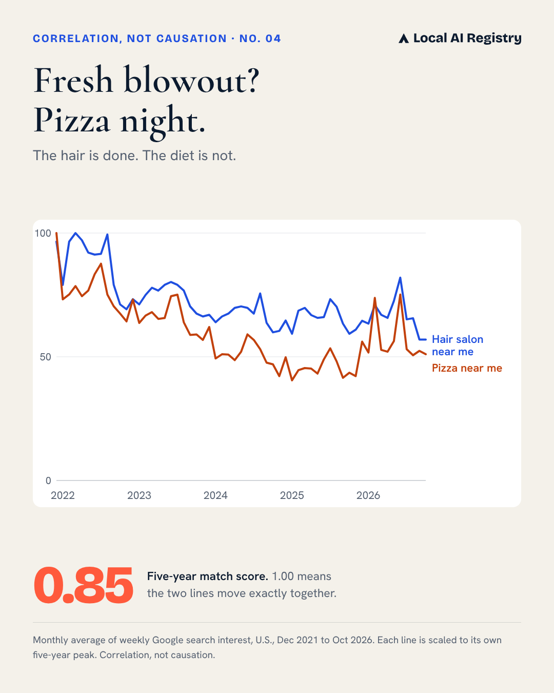
Correlation, Not Causation · No. 04
Caption
A new haircut deserves a slice. “Hair salon near me” and “pizza near me” searches have moved together for five years (0.85 match). Correlation, not causation. Pizza is still the right call.
Pizza topping that ends friendships?
More strange search data from our research team: link in bio.
#CorrelationNotCausation #MedSpa #DataHumor #SearchData #LocalAIRegistry
Day 19Fri Dec 4
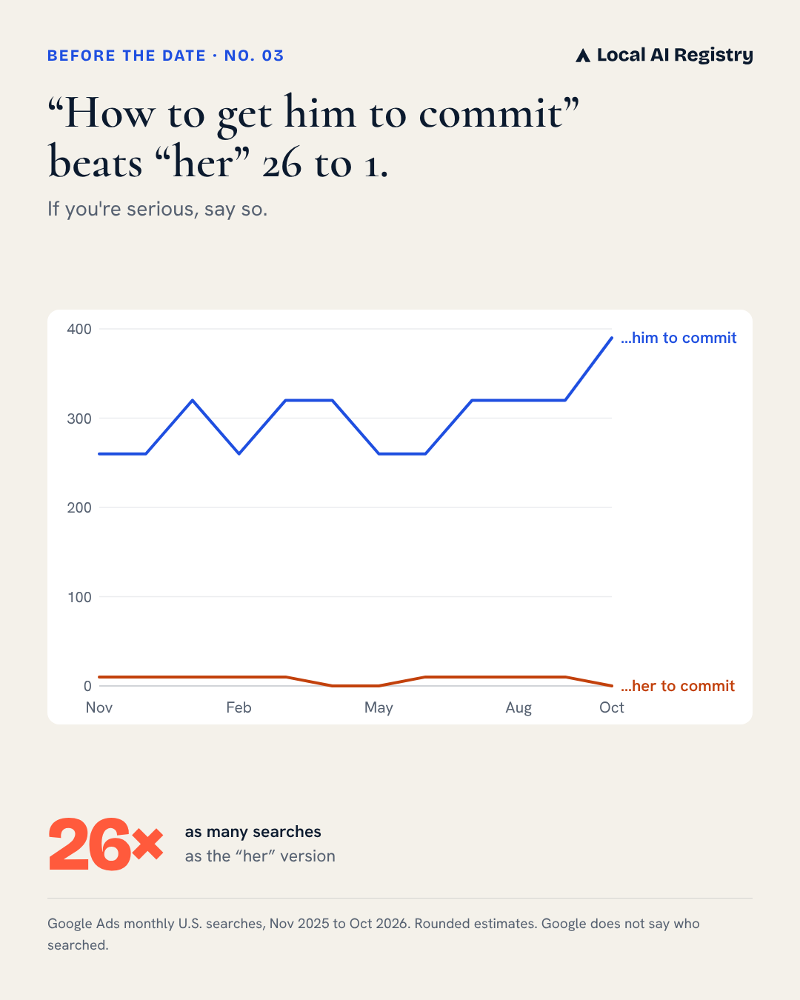
Before the Date · No. 03
Caption
Mixed signals are exhausting. “How to get him to commit” gets about 260 searches a month. “How to get her to commit”? About 10. If you know what you want, saying it out loud is the move.
Tag someone who needs to hear this.
More strange search data from our research team: link in bio.
#FirstDate #DatingTips #DatingAdvice #SearchData #LocalAIRegistry
Day 20Sat Dec 5
Dating Correlations · No. 07
Caption
Here's one that runs the other way. The more a state searches for Tinder, the less it searches for tummy tucks (match score −0.58). Alaska, Maine and Montana swipe the most and tuck the least. Mississippi and Georgia do the opposite. Hinge states, meanwhile, love a facelift. Search data, not science.
Tinder or Hinge?
More strange search data from our research team: link in bio.
#DatingLife #MedSpa #CorrelationNotCausation #SearchData #LocalAIRegistry
Day 21Sun Dec 6
Dating Correlations · No. 08
Caption
Two very different kinds of procedure. The states that search for vasectomies the most search for facelifts the least (match score −0.57). Idaho, Utah and Montana lead on vasectomies. Florida, California and New York lead on facelifts. Correlation, not causation. Search data, not science.
Tag your state.
More strange search data from our research team: link in bio.
#DatingLife #MedSpa #CorrelationNotCausation #SearchData #LocalAIRegistry
Day 22Mon Dec 7
Search Affinity Lab · No. 06
Caption
The typical lip filler, laser hair removal or Brazilian wax searcher is about 33. The typical Botox searcher is about 41.
That gap matters. Households under 35 spend $647 to $863 a year on personal care. Households 35 to 54 spend about $1,200.
Younger clients stretch harder to pay: in a 2026 Zenoti survey, 26% of Gen Z had delayed medical or dental care to pay for beauty.
For younger treatments, payment plans and memberships do the selling.
Full research and every chart: link in bio.
#MedSpa #MedicalAesthetics #GoogleTrends #SearchData #LocalAIRegistry
Day 23Tue Dec 8
Correlation, Not Causation · No. 05
Caption
Somebody's getting ready for photos. Microneedling searches and engagement ring searches have tracked each other for five years (0.83 match). Coincidence? Probably. Cute? Definitely. Correlation, not causation.
Tag someone who should be ring shopping.
More strange search data from our research team: link in bio.
#CorrelationNotCausation #MedSpa #DataHumor #SearchData #LocalAIRegistry
Day 24Wed Dec 9
Search Affinity Lab · No. 08
Caption
In 2025, searches for “botox” rose 10% to 16% year over year. Sales of the Botox brand fell 5% to 12%.
People type “botox” for any wrinkle shot, the way they say Kleenex for any tissue. The same year, Jeuveau searches and sales both grew.
So watch searches for your own name, not the category word.
Full research and every chart: link in bio.
#MedSpa #MedicalAesthetics #GoogleTrends #SearchData #LocalAIRegistry
Day 25Thu Dec 10
Dating Correlations · No. 09
Caption
Smile, you've got a date. States that search for first date ideas the most also search for teeth whitening the most (match score 0.52). Bumble searches follow the same pattern (also 0.52). Utah and Rhode Island are big on date planning. Kansas searches teeth whitening more than any other state. Search data, not science.
Best first date you ever had?
More strange search data from our research team: link in bio.
#DatingLife #MedSpa #CorrelationNotCausation #SearchData #LocalAIRegistry
Day 26Fri Dec 11
Before the Date · No. 04
Caption
She's thinking long term. Over the past five years, “is he the one” has been searched about 1.4 times as often as “is she the one,” and it wins every year. Guys: consistency is what answers that question.
When did you know?
More strange search data from our research team: link in bio.
#FirstDate #DatingTips #DatingAdvice #SearchData #LocalAIRegistry
Day 27Sat Dec 12
Dating Correlations · No. 10
Caption
The more a state searches for bachelorette parties, the less it searches for tummy tucks (match score −0.51). Iowa, Illinois and South Dakota plan the parties. Mississippi and Texas plan the tucks. Correlation, not causation. Search data, not science.
Who's planning a bachelorette right now?
More strange search data from our research team: link in bio.
#DatingLife #MedSpa #CorrelationNotCausation #SearchData #LocalAIRegistry
Day 28Sun Dec 13
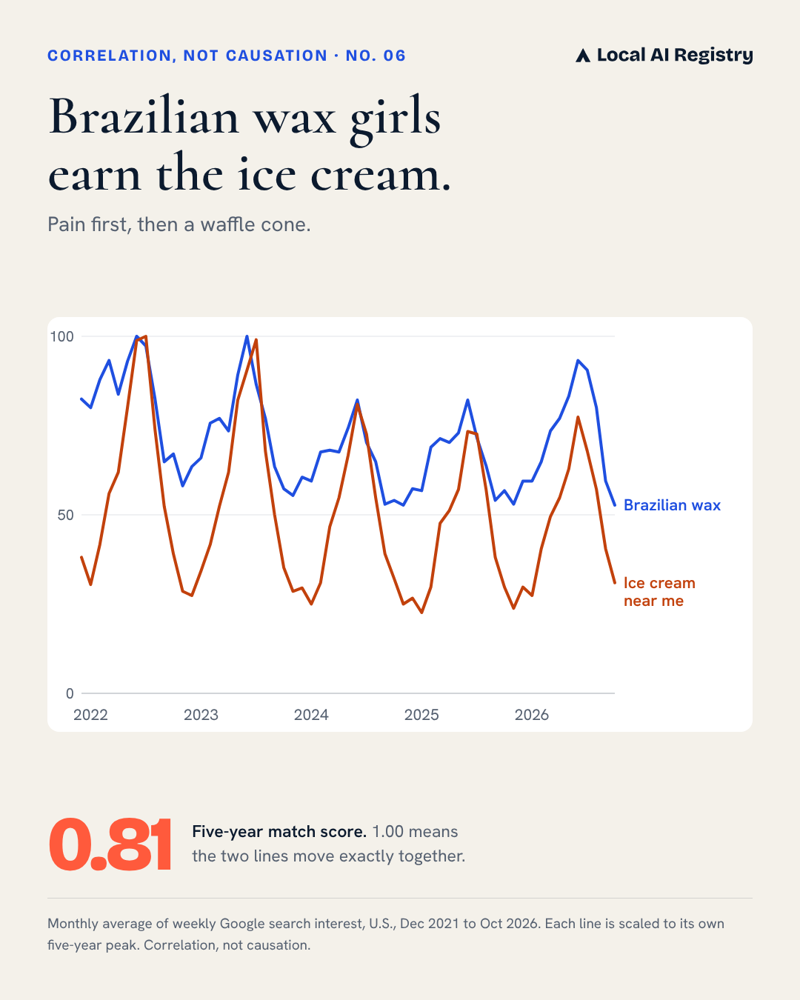
Correlation, Not Causation · No. 06
Caption
Brave girls get dessert. “Brazilian wax” and “ice cream near me” rise and fall together year after year (0.81 match). Mostly because of summer. Mostly. Correlation, not causation.
Tag your post-wax ice cream buddy.
More strange search data from our research team: link in bio.
#CorrelationNotCausation #MedSpa #DataHumor #SearchData #LocalAIRegistry
Day 29Mon Dec 14
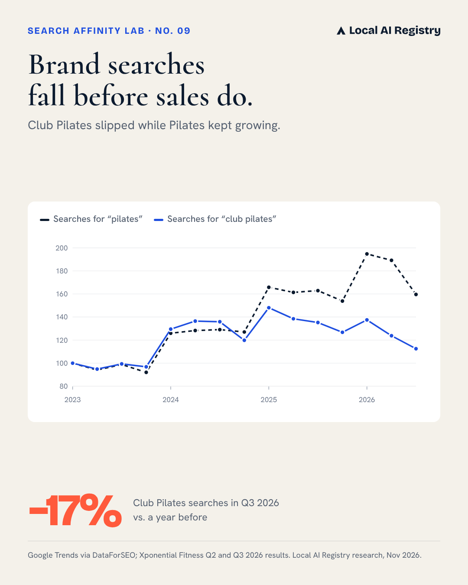
Search Affinity Lab · No. 09
Caption
Club Pilates searches stopped growing in mid-2025. A few months later, same-store sales at its parent company turned negative and kept falling, to down 7.5% by Q3 2026.
Meanwhile, plain “pilates” searches were still up 17% in Q2 2026. People wanted Pilates. They just weren't searching for that brand.
For any local business: when searches for your name drop and your category doesn't, someone is taking your clients.
Full research and every chart: link in bio.
#MedSpa #MedicalAesthetics #GoogleTrends #SearchData #LocalAIRegistry
Day 30Tue Dec 15
Dating Correlations · No. 11
Caption
Shopping for the holidays? The search data has opinions. For every 100 “gifts for girlfriend” searches in December, about 7 were for jewelry. Wives were the top lingerie searches. Moms got the most spa day searches of anyone. Husbands and boyfriends? Basically never a spa day: 30 and 10 searches all month. Search data, not science.
Who's getting a spa day from you this year?
More strange search data from our research team: link in bio.
#DatingLife #MedSpa #CorrelationNotCausation #SearchData #LocalAIRegistry
Day 31Wed Dec 16
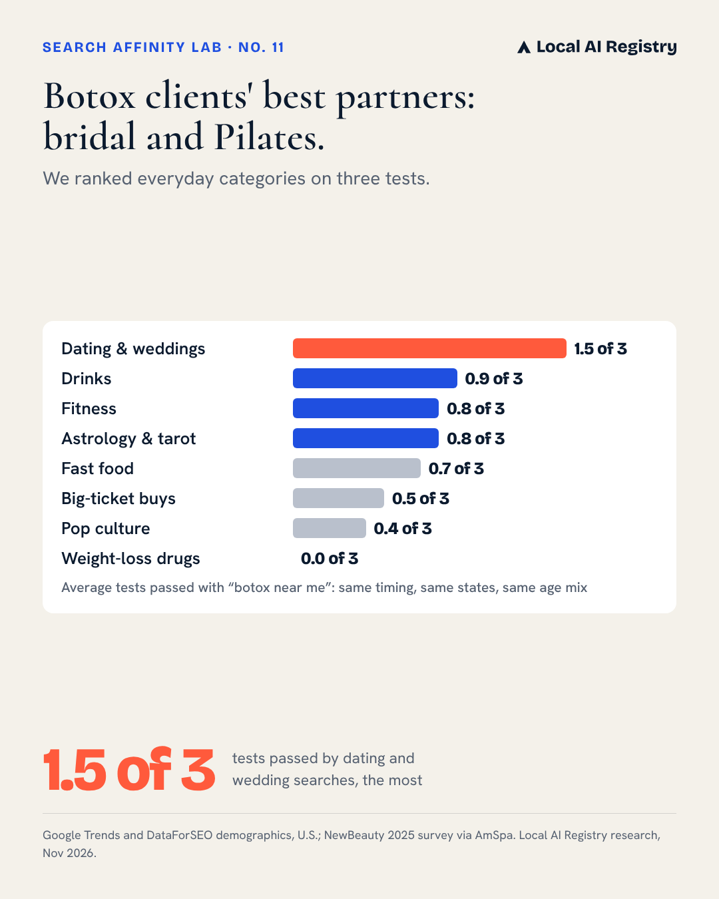
Search Affinity Lab · No. 11
Caption
We checked “botox near me” against dozens of everyday searches: do they rise together, in the same states, with the same age mix?
Wedding and dating searches pass the most tests. Pilates passes on states and age, and fitness is one of the last things clients cut.
Wine matches on states too, but dining out is the first thing clients cut. Try a one-off event before a standing deal.
Bridal shops and Pilates studios: call your local med spa.
Full research and every chart: link in bio.
#MedSpa #MedicalAesthetics #GoogleTrends #SearchData #LocalAIRegistry
Day 32Thu Dec 17
Dating Correlations · No. 12
Caption
Who's still shopping on December 24th? On Christmas Eve, searches for “gift for wife” ran 2.4 to 2.8 times searches for “gift for husband,” two years in a row. Gifts for her climb right up to the last minute. Gifts for him barely move. Search data, not science.
Tag the last-minute shopper in your life.
More strange search data from our research team: link in bio.
#DatingLife #MedSpa #CorrelationNotCausation #SearchData #LocalAIRegistry
Day 33Fri Dec 18
Before the Date · No. 05
Caption
Overthinking is universal, but she does more of it. “Does he like me” has run about 1.5 times “does she like me” over the past five years. So yes, she's wondering. Text back. Make the plan.
Double text: yes or no?
More strange search data from our research team: link in bio.
#FirstDate #DatingTips #DatingAdvice #SearchData #LocalAIRegistry
Day 34Sat Dec 19
Correlation, Not Causation · No. 07
Caption
The dress has to fit somehow. Breast augmentation searches and wedding dress searches have moved together for five years (0.76 match). We are not saying brides do this. We are saying the chart does. Correlation, not causation.
More strange search data from our research team: link in bio.
#CorrelationNotCausation #MedSpa #DataHumor #SearchData #LocalAIRegistry
Day 35Sun Dec 20
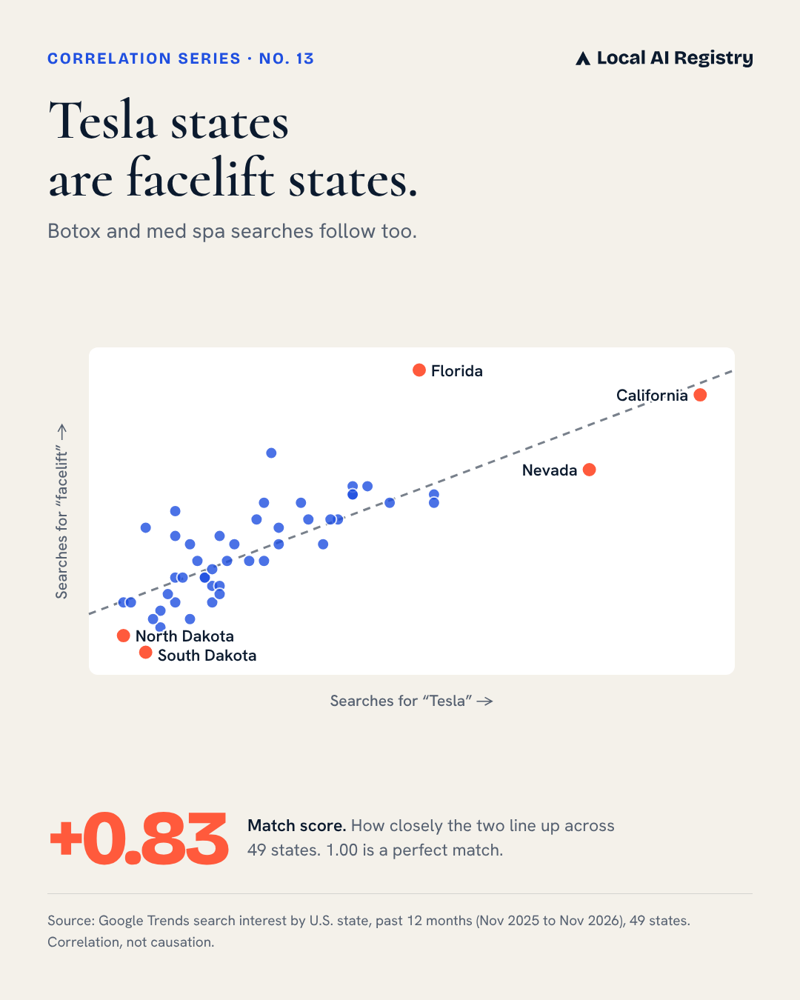
Dating Correlations · No. 13
Caption
New car, new face? States that search for Tesla the most also search for facelifts the most (match score 0.83, one of the strongest in the series). Tesla states also lean toward Botox (0.54) and med spa searches (0.55). California, Florida and Nevada top the chart. Search data, not science.
Would you rather: Tesla or a facelift?
More strange search data from our research team: link in bio.
#DatingLife #MedSpa #CorrelationNotCausation #SearchData #LocalAIRegistry
Day 36Mon Dec 21
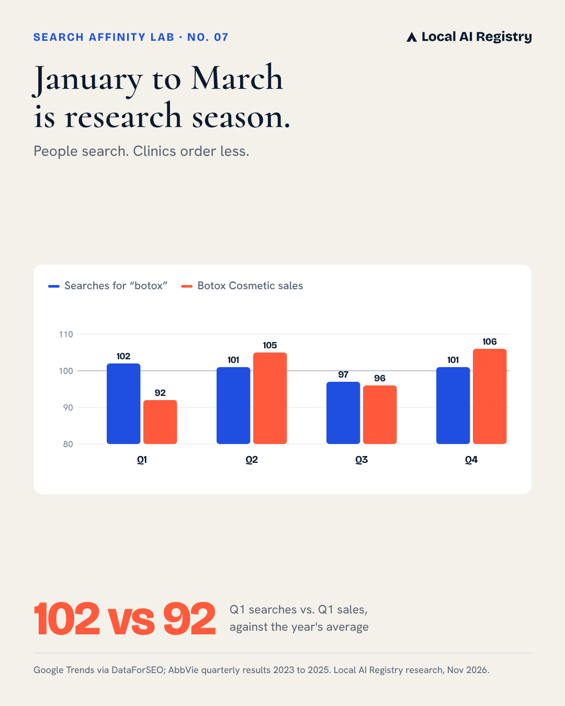
Search Affinity Lab · No. 07
Caption
Botox searches hold steady in January to March. Botox sales to clinics run 8% below average, then jump in spring.
Part of that is clinics stocking up in Q4. But the searches don't stop. People are researching in Q1 and booking later.
If you cut marketing after the holidays, you go quiet right when people are deciding.
Full research and every chart: link in bio.
#MedSpa #MedicalAesthetics #GoogleTrends #SearchData #LocalAIRegistry
Day 37Tue Dec 22
Dating Correlations · No. 14
Caption
Timeless, in more ways than one. States that search for Rolex the most also search for facelifts the most (match score 0.82) and for liposuction (0.76). Florida, New York and California lead. West Virginia and South Dakota sit low on both. Correlation, not causation. Search data, not science.
More strange search data from our research team: link in bio.
#DatingLife #MedSpa #CorrelationNotCausation #SearchData #LocalAIRegistry
Day 38Wed Dec 23
Search Affinity Lab · No. 12
Caption
Remember our Correlation, Not Causation posts? We put all 14 joke pairs through three tests: do they rise together, in the same states, with the same age mix?
13 fell apart. One held up. Across 680 pairs, only two passed everything: nose job and tarot, and Botox and wedding dress.
The cards were right.
Full research and every chart: link in bio.
#MedSpa #MedicalAesthetics #GoogleTrends #SearchData #LocalAIRegistry
Day 39Thu Dec 24
Correlation, Not Causation · No. 08
Caption
Summer starter pack, apparently. “Brazilian wax” and White Claw searches have tracked each other for five years (0.76 match). There are no laws when you're drinking Claws. Correlation, not causation.
Favorite White Claw flavor?
More strange search data from our research team: link in bio.
#CorrelationNotCausation #MedSpa #DataHumor #SearchData #LocalAIRegistry
Day 40Fri Dec 25
Before the Date · No. 06
Caption
The biggest gap of the bunch. “Does he love me” has been searched about 1.6 times as often as “does she love me” over the past five years. If you feel it, say it. She's literally Googling it.
Who said “I love you” first?
More strange search data from our research team: link in bio.
#FirstDate #DatingTips #DatingAdvice #SearchData #LocalAIRegistry
Day 41Sat Dec 26
Dating Correlations · No. 15
Caption
Our strongest match yet (0.85). States that search for cologne the most also search for the Plan B pill the most. Louisiana, Texas and Mississippi top both lists. New Hampshire and Vermont sit at the bottom of both. We are not saying cologne works. We are just saying. Search data, not science.
More strange search data from our research team: link in bio.
#DatingLife #MedSpa #CorrelationNotCausation #SearchData #LocalAIRegistry
Day 42Sun Dec 27
Dating Correlations · No. 16
Caption
Cologne or Tinder, pick one. The more a state searches for cologne, the less it searches for Tinder (match score −0.76). Mississippi and Louisiana go heavy on cologne. Vermont and Montana go heavy on Tinder. Search data, not science.
Team cologne or team swipe?
More strange search data from our research team: link in bio.
#DatingLife #MedSpa #CorrelationNotCausation #SearchData #LocalAIRegistry
Day 43Mon Dec 28
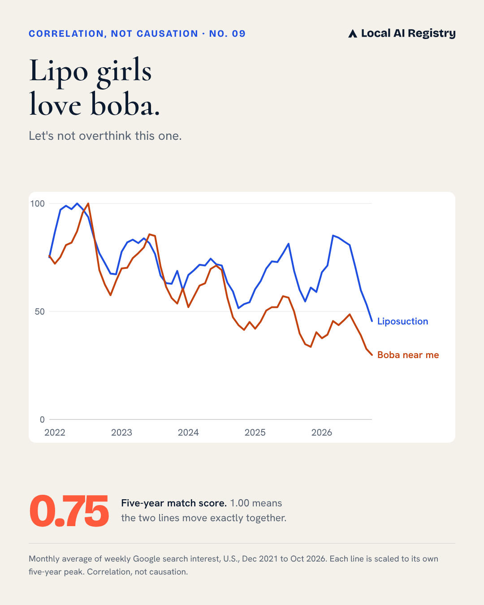
Correlation, Not Causation · No. 09
Caption
We have questions too. Liposuction searches and “boba near me” searches have moved together for five years (0.75 match). The math says yes. Your nutritionist says no. Correlation, not causation.
More strange search data from our research team: link in bio.
#CorrelationNotCausation #MedSpa #DataHumor #SearchData #LocalAIRegistry
Day 44Tue Dec 29
Dating Correlations · No. 17
Caption
States that search “sushi near me” the most also search for facelifts the most (match score 0.80). Florida, California and Hawaii lead on both. The Dakotas sit low on both. Correlation, not causation. Search data, not science.
Best sushi date spot near you?
More strange search data from our research team: link in bio.
#DatingLife #MedSpa #CorrelationNotCausation #SearchData #LocalAIRegistry
Day 45Wed Dec 30
Dating Correlations · No. 18
Caption
When you only get three minutes, apparently the nose matters. States that search for speed dating the most also search for nose jobs the most (match score 0.69). Rhode Island, New York and California lead. Search data, not science.
Would you ever try speed dating?
More strange search data from our research team: link in bio.
#DatingLife #MedSpa #CorrelationNotCausation #SearchData #LocalAIRegistry
Day 46Thu Dec 31
Correlation, Not Causation · No. 10
Caption
It's written in the stars. “Botox near me” and astrology searches have tracked each other for five years (0.71 match). Booking Botox around your moon sign? We support it. Correlation, not causation.
Drop your sign.
More strange search data from our research team: link in bio.
#CorrelationNotCausation #MedSpa #DataHumor #SearchData #LocalAIRegistry
Day 47Fri Jan 1
Before the Date · No. 07
Caption
Guys, you're not alone. “How to tell if a girl likes you” outsearches “how to tell if a guy likes you,” about 1.2 to 1 over five years and 1.4 to 1 this past year. Easiest way to find out? Ask her out.
Tag the friend who overthinks everything.
More strange search data from our research team: link in bio.
#FirstDate #DatingTips #DatingAdvice #SearchData #LocalAIRegistry
Day 48Sat Jan 2
Dating Correlations · No. 19
Caption
Follow the money. States that search “sugar daddy” the most also search for tummy tucks the most (match score 0.69). They also search more for cologne (0.59) and steakhouses (0.56). Mississippi, Arkansas and Louisiana lead. Vermont and Montana sit low. Search data, not science.
More strange search data from our research team: link in bio.
#DatingLife #MedSpa #CorrelationNotCausation #SearchData #LocalAIRegistry
Day 49Sun Jan 3
Dating Correlations · No. 20
Caption
Old school wins. The more a state searches “steakhouse near me,” the less it searches for Tinder (match score −0.64). Mississippi and Georgia book the steak. Alaska and Vermont swipe. Search data, not science.
Steak dinner or app date?
More strange search data from our research team: link in bio.
#DatingLife #MedSpa #CorrelationNotCausation #SearchData #LocalAIRegistry
Day 50Mon Jan 4
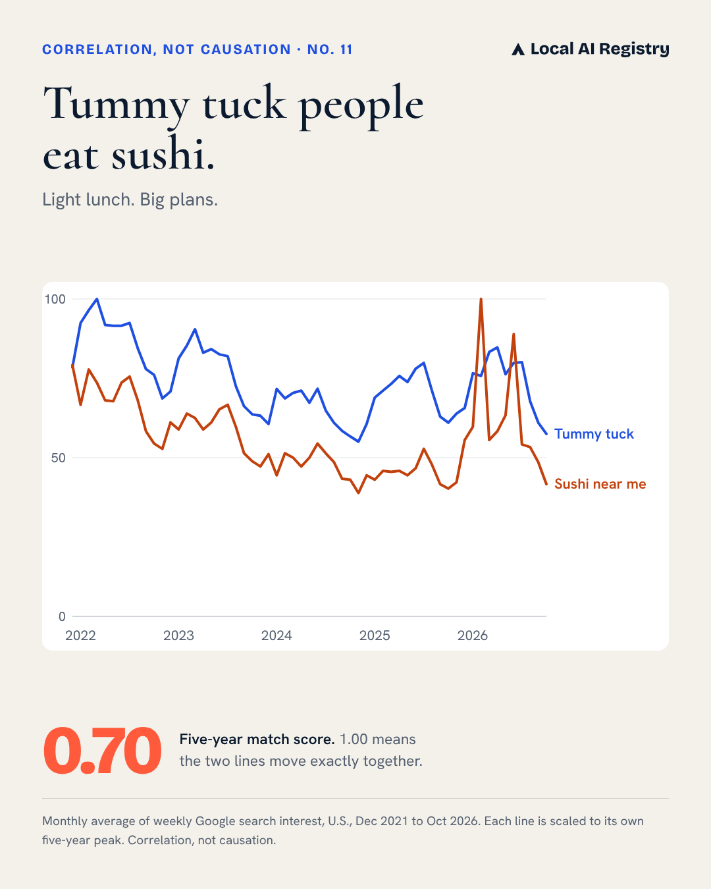
Correlation, Not Causation · No. 11
Caption
Tummy tuck searches and “sushi near me” searches have moved together for five years (0.70 match). Clean eating before the big day? Or just a spicy tuna roll? Correlation, not causation.
Sushi order go.
More strange search data from our research team: link in bio.
#CorrelationNotCausation #MedSpa #DataHumor #SearchData #LocalAIRegistry
Day 51Tue Jan 5
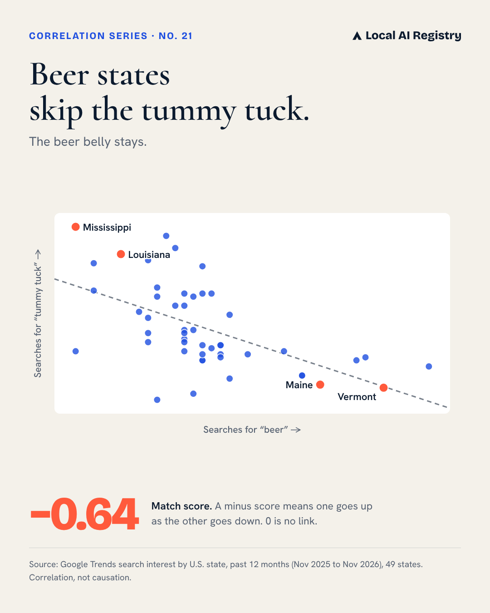
Dating Correlations · No. 21
Caption
Embrace the belly. The more a state searches for beer, the less it searches for tummy tucks (match score −0.64). Vermont and Maine search beer. Mississippi and Louisiana search tummy tucks. Correlation, not causation. Search data, not science.
Tag your beer buddy.
More strange search data from our research team: link in bio.
#DatingLife #MedSpa #CorrelationNotCausation #SearchData #LocalAIRegistry
Day 52Wed Jan 6
Dating Correlations · No. 22
Caption
States that search for thongs the most also search for nose jobs the most (match score 0.55). California, New York and Florida lead on both. Mississippi and Iowa sit low on both. Search data, not science.
No comment needed.
More strange search data from our research team: link in bio.
#DatingLife #MedSpa #CorrelationNotCausation #SearchData #LocalAIRegistry
Day 53Thu Jan 7
Correlation, Not Causation · No. 12
Caption
Threaded brows, then the drive-thru. Eyebrow threading and Chick-fil-A searches have tracked each other for five years (0.69 match). My pleasure. Correlation, not causation.
Chick-fil-A sauce or Polynesian?
More strange search data from our research team: link in bio.
#CorrelationNotCausation #MedSpa #DataHumor #SearchData #LocalAIRegistry
Day 54Fri Jan 8
Before the Date · No. 08
Caption
Trust issues are not just a her thing. “Is he cheating” runs about 1.4 times “is she cheating” over five years, so plenty of guys are asking too. Be the person nobody has to Google about.
More strange search data from our research team: link in bio.
#FirstDate #DatingTips #DatingAdvice #SearchData #LocalAIRegistry
Day 55Sat Jan 9
Dating Correlations · No. 23
Caption
Designer bag, designer body. States that search for Louis Vuitton the most also search for liposuction the most (match score 0.70) and for facelifts (0.69). Florida, New York and California lead. South Dakota and Maine sit low on both. Search data, not science.
More strange search data from our research team: link in bio.
#DatingLife #MedSpa #CorrelationNotCausation #SearchData #LocalAIRegistry
Day 56Sun Jan 10
Dating Correlations · No. 24
Caption
Draft day beats surgery day. The more a state searches for fantasy football, the less it searches for tummy tucks (match score −0.62). Minnesota and Massachusetts set lineups. Mississippi and Alabama search tummy tucks. Search data, not science.
Tag your league's last-place finisher.
More strange search data from our research team: link in bio.
#DatingLife #MedSpa #CorrelationNotCausation #SearchData #LocalAIRegistry
Day 57Mon Jan 11
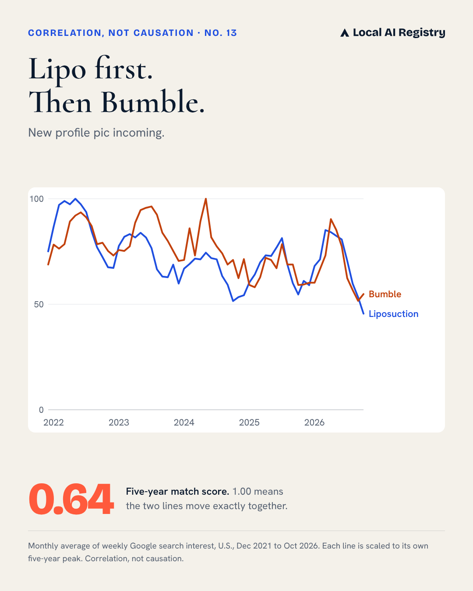
Correlation, Not Causation · No. 13
Caption
Updating the profile, inside and out. Liposuction and Bumble searches have moved together for five years (0.64 match). Swipe right on the glow up. Correlation, not causation.
Worst dating app opener you've gotten?
More strange search data from our research team: link in bio.
#CorrelationNotCausation #MedSpa #DataHumor #SearchData #LocalAIRegistry
Day 58Tue Jan 12
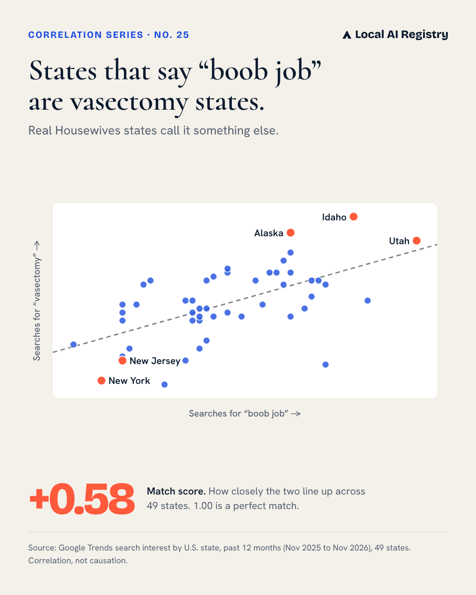
Dating Correlations · No. 25
Caption
It depends what you call it. States that search the casual term “boob job” the most also search for vasectomies the most (match score 0.58). Idaho, Utah and Alaska lead. Real Housewives states go the other way (−0.62). New Jersey and New York search “boob job” the least. Search data, not science.
More strange search data from our research team: link in bio.
#DatingLife #MedSpa #CorrelationNotCausation #SearchData #LocalAIRegistry
Day 59Wed Jan 13
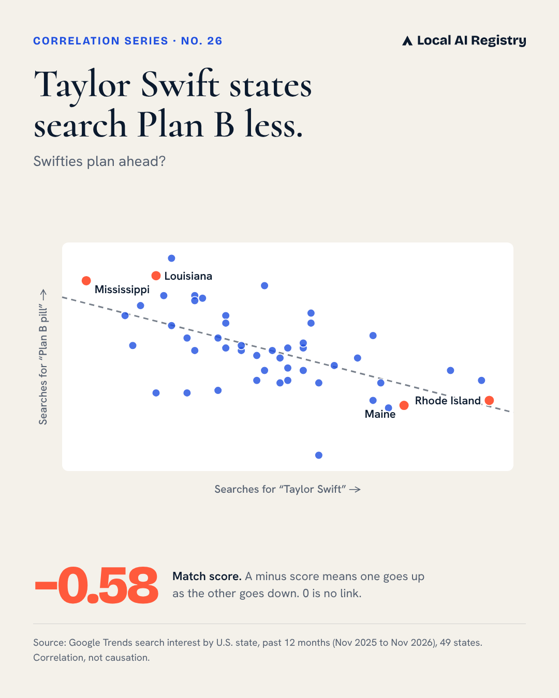
Dating Correlations · No. 26
Caption
The more a state searches for Taylor Swift, the less it searches for the Plan B pill (match score −0.58). Rhode Island and Maine love Taylor. Mississippi and Louisiana search Plan B more. Correlation, not causation. Search data, not science.
Which era are you in?
More strange search data from our research team: link in bio.
#DatingLife #MedSpa #CorrelationNotCausation #SearchData #LocalAIRegistry
Day 60Thu Jan 14
Correlation, Not Causation · No. 14
Caption
The cards have spoken. Nose job searches and tarot searches have tracked each other for five years (0.60 match). Pull the Star card, book the consult. Correlation, not causation.
What card would you pull today?
More strange search data from our research team: link in bio.
#CorrelationNotCausation #MedSpa #DataHumor #SearchData #LocalAIRegistry
Day 61Fri Jan 15
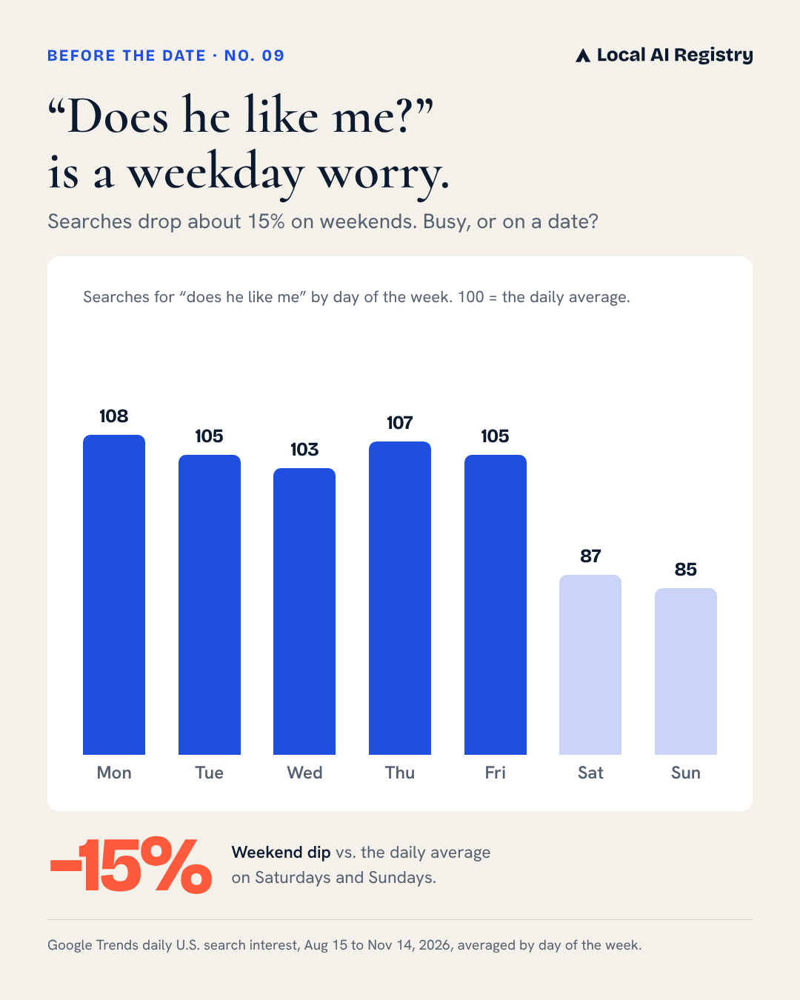
Before the Date · No. 09
Caption
Overthinking runs Monday to Friday. Searches for “does he like me” sit about 5% to 8% above average on weekdays and drop about 15% on Saturdays and Sundays. Maybe that's when the dates happen. Guys: a midweek text goes further than you think.
What day do you overthink the most?
More strange search data from our research team: link in bio.
#FirstDate #DatingTips #DatingAdvice #SearchData #LocalAIRegistry
Day 62Sat Jan 16
Dating Correlations · No. 27
Caption
The more a state searches for Match.com, the less it searches for cologne (match score −0.64). Vermont and Maine go for Match.com. Mississippi and Louisiana go for cologne. Match.com states also search Bumble more (0.55). Search data, not science.
What's the best dating app right now?
More strange search data from our research team: link in bio.
#DatingLife #MedSpa #CorrelationNotCausation #SearchData #LocalAIRegistry
Day 63Sun Jan 17
Dating Correlations · No. 28
Caption
States that search for Brazilian waxes the most also search for tummy tucks the most (match score 0.62). Georgia, Louisiana and Mississippi lead. Maine and Vermont sit low on both. Search data, not science.
Tag your summer-ready friend.
More strange search data from our research team: link in bio.
#DatingLife #MedSpa #CorrelationNotCausation #SearchData #LocalAIRegistry
Every number in these posts comes from the study's saved data. If something looks off, ask Claude before posting.